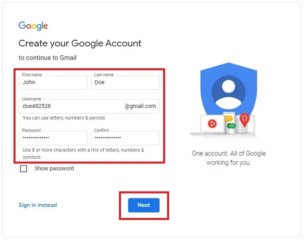
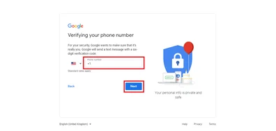
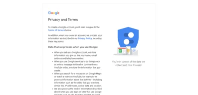
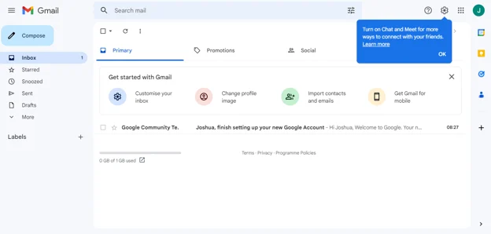
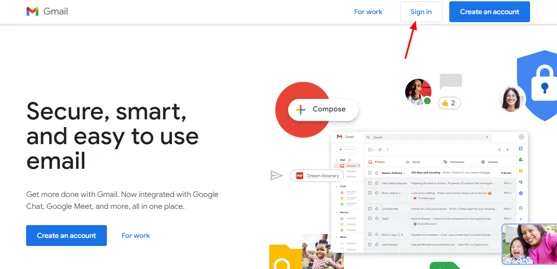

In today's digital age, email remains a vital tool for communication, both personally and professionally. Whether you're corresponding with family and friends, managing business contacts, or coordinating activities, a reliable email account is essential. With the variety of email services available, setting up and managing an email account can seem daunting, but it doesn't have to be.
This guide aims to simplify the process of setting up and using a personal email account. We'll cover everything from creating your first Gmail or Outlook account to best practices for email communication and troubleshooting common issues. By the end of this guide, you'll have the knowledge and confidence to effectively manage your email communications.
Email accounts not only allow you to send and receive messages but also provide a host of other functionalities such as calendaring, contact management, and task organization. With features designed to enhance productivity and streamline communication, mastering your email account is a skill that will benefit you in numerous ways.
In the following sections, we will walk you through the steps to set up a Gmail and an Outlook account, two of the most popular email services available today. We'll provide detailed instructions, complete with screenshots, to ensure you can follow along easily. Additionally, we'll share tips on how to personalize your email account and use its features to their fullest potential.
Once your email account is set up, maintaining good email etiquette and understanding best practices will help you communicate more effectively. From crafting professional emails to organizing your inbox, we will cover essential tips that will improve your email habits and enhance your overall email experience.
Finally, we recognize that email issues can arise, whether due to technical glitches or user errors. In our troubleshooting section, we'll offer solutions to common problems, ensuring that you can quickly resolve any issues and keep your email running smoothly.
- Step-by-step guides for setting up Gmail and Outlook accounts
- Best practices for email communication
- Tips for personalizing and organizing your email
- Common troubleshooting techniques
- Resources for further learning and support
Gmail is a free email service provided by Google. In many ways, Gmail is like any other email service: You can send and receive emails, block spam, create an address book, and perform other basic email tasks. But it also has some more unique features that help make it one of the most popular online email services.
If you want to know how to setup a Gmail account, here are the step-by-step procedure for both PC and Mobile version.
How to Set Up a Gmail Account on a PC
- Visit Gmail's website
The first step to creating a Gmail account is to visit the Gmail website. Next, click on a blue button that says "Create an account" in the top-right corner of the page.
- Fill in your information
You'll need to input your first and last name and the username you'd like for your email address. The username is what comes before "@gmail.com" in your email address (for instance, in "example@gmail.com,” the username is “example”).
You'll also need to set a strong password. Once you've done all of that, click on "Next."
 - Verify your phone number
Next, you must verify your phone number. You can choose to receive a verification code via text message or voice call. When you receive the code, type it into the verification box and click "Verify."
 - Accept Google's terms of service and privacy policy
After verifying your phone number, the next step is to accept Google's terms of service and privacy policy.
 - Personalize your account
Your Gmail dashboard will be the next page you'll see. This is where you can view your emails, create and send new emails, and set up Gmail to forward your emails to another address if you'd like.
You can also personalize your account by adding a profile picture and filling in your personal information.
 - Sign in to your new Gmail account
To sign in to your Gmail account, all you have to do is visit Gmail's website and click on the "Sign in" button in the top-right corner of the page, then enter your email and password.

Microsoft Outlook is a part of Office Suite that can be used as a standalone application. It helps you to access Microsoft Exchange Server email. Additionally, it provides contacts, calendaring, and task management functionality. This advanced email application is widely used for business purposes.
Creating a free email account with Microsoft Outlook is a cinch. Microsoft’s powerful email client is intuitive, secure, easily organizable, and connected to other Microsoft 365 apps. Best of all: It’s free. See how you can get started!
Create a Microsoft Account
-
Go to the Microsoft Outlook website and select Create free account. From here, you can create an account with an existing email address, which can be tied to any email client. But to create a new Outlook account, do the following:
-
Click Get a new email address. Here, you can select whether you want your email address to end with @outlook.com, or @hotmail.com, which is Microsoft’s old-school email address. Either preference leads to the same account.
-
Choose a username. If your username is already taken, the Microsoft account website will ask you to choose another one. You can use your full name for a professional look, or if you’re creating something personal, you can mix it up. And you can always change your email address.
Set up your Outlook email
-
Once you click Next, you’ll be able to access Outlook either through a laptop or mobile app, or in your preferred web browser. Here’s how you can get started with the most basic features in Outlook. Take your time in learning how to add events to the calendar, set up mail forwarding, and where menu items are.
-
Now, you can learn how to get the most out of your email, from creating an effective email signature to keeping your family organized through the Outlook calendar. See what you can do with a complete suite of productivity tools.
Email etiquette is the code of conduct that guides behavior when writing or responding to emails. Depending on the recipient of your email, you may modify the principles that determine the proper etiquette. For example, email etiquette changes when you write to a friend, colleague or business acquaintance.
Your communication reflects your character, work ethic and attention to detail. Companies may benefit from implementing best practices for email etiquette for these reasons:
-
Professionalism: Using proper email etiquette conveys a professional image of the organization.
-
Efficiency: Emails that follow etiquette are direct and concise, conveying their message quickly.
5 email etiquette guidelines for the workplace
-
Use standard formatting
Standard fonts, such as Times New Roman or Arial, colors and sizes are appropriate for business emails. If you use bold or italics, try not to use them on more than one word or a string of words in a single email.
If you're copying and pasting text, clear the formatting before sending the email because it could appear different from the rest of your text. To clear formatting, you can use "Command + \" on a Mac or "Ctrl + Shift + N" on a PC.
-
Include a clear subject line
Title your email so the recipient knows what the message is about. For example, if you're emailing to follow up on a presentation, you might write, "Quick question about your presentation." Emails with clear and brief subject lines often have better open rates, so it's useful to be descriptive without sharing too much information. Also, consider how much text the email provider can display in an inbox so that your message appears complete.
-
Email from a professional email address
Use a company email address if possible. Though, if you're self-employed or using a personal email address for work-related correspondence, ensure that your email address doesn't contain any words that some might consider unprofessional. If so, then consider setting up a work-only email address.
-
Use the correct email format
A business email has a specific but simple structure, which includes a subject line, greeting, body and a sign-off. The body of your email may be in short paragraphs. Organize the information in the body section so your recipient can easily understand your message.
-
Use professional greetings
Choose a salutation that's appropriate for the relationship you have with the recipient. If you're emailing a coworker, a casual greeting such as "Hello" may be appropriate. If you're contacting someone for the first time or if they're a professional acquaintance, use a more formal greeting like "Dear Sarah Atkins." It's recommended to use the person's name exactly as it's shown in their email signature line. This means don't assume someone named Jennifer goes by Jen unless you've seen them sign their emails that way.
Email is one of the most essential and widely used communication tools in the modern world. However, sometimes you may encounter problems with sending or receiving emails, such as error messages, slow performance, missing messages, or spam. In this article, we will guide you through the steps to troubleshoot email issues and help you restore your email functionality.
-
Check your internet connection
The first step to troubleshoot email issues is to make sure that your internet connection is working properly. You can do this by opening a web browser and trying to access a website. If you can't load the website, then your internet connection may be down or unstable. You can try to restart your modem, router, or device, or contact your internet service provider for assistance. If you can load the website, then your internet connection is not the problem and you can move on to the next step.
-
Verify your email settings
The next step to troubleshoot email issues is to verify that your email settings are correct and compatible with your email service provider. This can be done by making sure your email address and password are entered correctly, matching the ones used to log in. Additionally, you must check the server names, ports, and encryption methods used to send and receive emails. These settings can be found on the provider's website or documentation, or by contacting them directly. Lastly, you should check your firewall and antivirus settings, as they may block or interfere with your email connection. You can try disabling or adjusting these settings temporarily, but make sure to re-enable them afterwards for security purposes.
-
Test your email client or app
The third step to troubleshoot email issues is to test your email client or app, and see if it is functioning properly. You can do this by sending a test email to yourself to check if you can send and receive emails. If not, you can try updating your email client or app to the latest version, as sometimes bugs or glitches affect performance. If that doesn't work, you can switch to another email client or app such as Outlook, Gmail, Thunderbird, Mail, or others. You will need to enter your email settings and credentials in the new email client or app and follow its instructions for set up.
-
Clear your cache and cookies
The fourth step to troubleshoot email issues is to clear your cache and cookies from your web browser or email client or app. Cache and cookies are temporary files that store information about your browsing or email activity, such as your preferences, history, or login details. However, sometimes cache and cookies may become corrupted or outdated, and cause problems with your email connection or performance. You can try to clear your cache and cookies, and see if that improves your email situation. You can find the option to clear your cache and cookies in your web browser or email client or app's settings or preferences menu, or by following its help or support guides.
-
Scan your device for malware
The fifth step to troubleshoot email issues is to scan your device for malware, such as viruses, spyware, or ransomware. Malware is malicious software that can infect your device and compromise your security, privacy, or functionality. Malware can also interfere with your email connection or performance, or even steal or delete your email data. You can try to scan your device for malware, and see if that detects and removes any threats. You can use a reputable and reliable antivirus or anti-malware software to scan your device, and follow its instructions to perform the scan and quarantine or delete any malware.
-
Contact your email service provider or support team
The sixth and final step to troubleshoot email issues is to contact your email service provider or support team, and seek their help or advice. If none of the previous steps have resolved your email issues, then there may be a problem with your email service provider's server, network, or system. You can contact your email service provider or support team, and explain your email issues and the steps you have taken to troubleshoot them. They may be able to diagnose and fix your email issues, or provide you with further guidance or solutions.
In conclusion, setting up and managing a personal email account is a straightforward process that can greatly enhance your communication capabilities. Whether you choose Gmail or Outlook, the key steps involve creating an account, verifying your information, and personalizing your settings to suit your needs.
Adhering to email best practices, such as maintaining a professional tone, using clear subject lines, and organizing your inbox, will improve the efficiency and effectiveness of your email communications. By following these guidelines, you can ensure that your emails are well-received and that you maintain a high standard of digital professionalism.
Troubleshooting common email issues is an important skill that can save you time and frustration. By understanding how to check your internet connection, verify email settings, and scan for malware, you can resolve most email problems quickly and efficiently.
We hope this guide has provided you with valuable insights and practical tips for setting up and using a personal email account. As you continue to explore the features of your email service and develop your email skills, remember that effective communication is a powerful tool in both your personal and professional life.
Thank you for reading, and happy emailing!
- Follow the step-by-step guides to set up your email account
- Implement email best practices to improve communication
- Utilize troubleshooting tips to resolve common issues
- Explore additional resources for further learning
- Stay organized and maintain a professional email presence